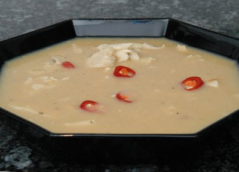

| Zutaten für 4 Personen: | |
| 1 El | Öl |
| 1 | Zwiebel |
| 1 | Knoblauchzehe |
| 1 Tl | Thymianblättchen |
| 1 | Tomate |
| 500 g | Kochbananen (ergibt 300 g) in 5mm dicken Scheiben |
| 9 dl | Hühnerbouillon |
| 1 | Lorbeerblatt |
| 300 g | Pouletbrüstchen, in 5 mm breiten streifen |
| 1/2 | grosser grüner Chili / Peperoncino, entkernt, in Ringen |
| 1 Tl | Zitronensaft |
| Salz, Pfeffer nach Bedarf | |
ca. 45 Minuten. Ergibt ca. 1.2 Liter
Zwiebel schälen und fein hacken. Knoblauch pressen. Tomate entkernen und in Würfel schneiden.
Öl warm werden lassen. Zwiebel, Knoblauch und Thymian andämpfen, Tomaten und Bananen ca. 3 Minuten mitdämpfen.
Bouillon dazugiessen, Lorbeerblatt beigeben, aufkochen, Hitze reduzieren, Suppe zugedeckt ca. 25 Minuten köcheln.
Lorbeerblatt herausnehmen, Bananen mit der Flüssigkeit fein pürieren.
Pouletstreifen und Chili beigeben, Suppe zugedeckt ca. 5 Minuten weiter köcheln.
Zitronensaft darunter rühren, Suppe würzen.
Pro Person: 5g Fett, 20g Eiweiss, 26g Kohlenhydrate, 938 kJ, 224 kcal
Betty Bossi Zeitung 1/03
Ok. 18.1.2003 RE
Am 18.3.2010 hat mir die Suppe ganz gut geschmeckt. Das Pouletfleisch, einfach in der Suppe erwärmt ist etwas "chätschig" und der Chili war auf der scharfen Seite. Ich habe den Saft eines Limes genommen, was einen schönen erfrischenden Geschmack ergibt. RE
@LINKBACK_TAG@ @WAKELOCK@